MySQL-多表查询-索引-事务笔记
回顾
能够使用聚合函数
MAX: 获取这列最大值
MIN: 获取这列最小值
COUNT: 获取这列总数量
AVG: 获取这列平均值
SUM: 获取这列总和
能够使用SQL语句进行分组查询
GROUP BY 字段名
SELECT * FROM 表名 GROUP BY 字段名;
能够理解三大范式
1NF: 表中的字段不需要再拆分,可以直接使用
2NF: 1.一张表描述一个实体 2.每张表添加主键
3NF: 表中的字段引用其他表的主键
学习目标
- 能够使用内连接进行多表查询
- 能够使用左外和右外连接进行多表查询
- 能够使用子查询
- 能够理解多表查询的规律
- 能够理解事务的概念
- 能够说出事务的原理
- 理解mysql索引的作用
多表查询介绍
目标
了解什么是多表查询，及多表查询的两种方式
什么是多表查询
查询多张表才能得到我们想要的数据
比如：我们想查询到孙悟空在哪个部门，需要将部门表和员工表同时进行查询
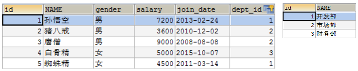
多表查询的分类

小结
什么是多表查询？
查询多张表才能得到我们想要的数据说出多表查询的2种方式?
表连接查询
子查询表连接查询-笛卡尔积现象
目标
学习什么是笛卡尔积，以及如何消除笛卡尔积
准备数据
-- 准备数据
-- 创建部门表
CREATE TABLE tab_dept (
id INT PRIMARY KEY AUTO_INCREMENT,
NAME VARCHAR(20)
);
INSERT INTO tab_dept (NAME) VALUES ('开发部'),('市场部'),('财务部');
-- 创建员工表
CREATE TABLE tab_emp (
id INT PRIMARY KEY AUTO_INCREMENT,
NAME VARCHAR(10),
gender CHAR(1), -- 性别
salary DOUBLE, -- 工资
join_date DATE, -- 入职日期
dept_id INT
);
INSERT INTO tab_emp(NAME,gender,salary,join_date,dept_id) VALUES('孙悟空','男',7200,'2013-02-24',1);
INSERT INTO tab_emp(NAME,gender,salary,join_date,dept_id) VALUES('猪八戒','男',3600,'2010-12-02',2);
INSERT INTO tab_emp(NAME,gender,salary,join_date,dept_id) VALUES('唐僧','男',9000,'2008-08-08',2);
INSERT INTO tab_emp(NAME,gender,salary,join_date,dept_id) VALUES('白骨精','女',5000,'2015-10-07',3);
INSERT INTO tab_emp(NAME,gender,salary,join_date,dept_id) VALUES('蜘蛛精','女',4500,'2011-03-14',1);
什么是笛卡尔积现象
需求：查询每个部门有哪些人
具体操作：
SELECT * FROM tab_dept, tab_emp;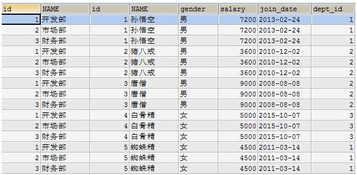
以上数据其实是左表的每条数据和右表的每条数据组合。左表有3条，右表有5条，最终组合后3*5=15条数据。
左表的每条数据和右表的每条数据组合，这种效果称为笛卡尔乘积
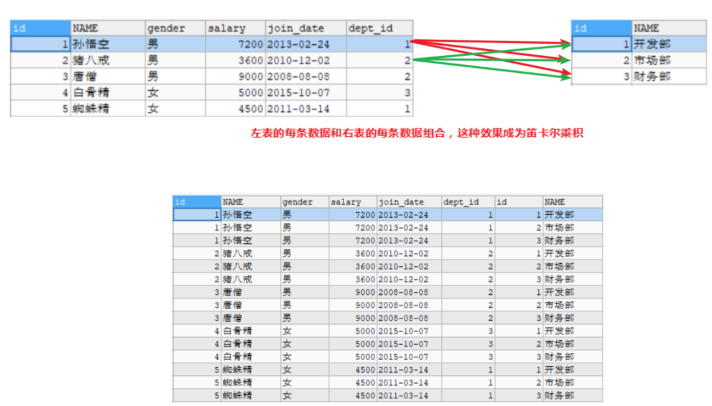
如何清除笛卡尔积现象的影响
我们发现不是所有的数据组合都是有用的，只有员工表.dept_id = 部门表.id 的数据才是有用的。所以需要通过条件过滤掉没用的数据。
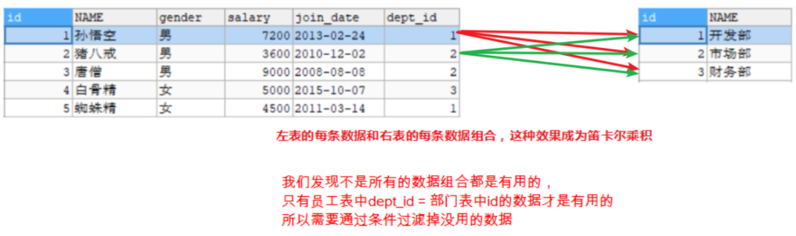
SELECT * FROM tab_dept, tab_emp WHERE tab_emp.`dept_id`=tab_dept.`id`;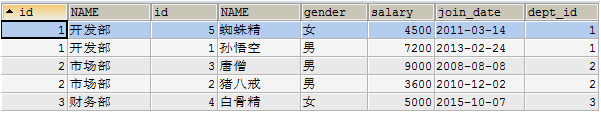
我们去掉笛卡尔积的条件称为: 表连接条件
小结
能够说出什么是笛卡尔积?
多表查询时,左表的每条数据和右表的每条数据进行组合
如何消除笛卡尔积：
外键=主表的主键;
表连接查询-内连接(重要)
目标
学习内连接的使用
什么是内连接
多表查询时获取符合条件的数据
内连接效果
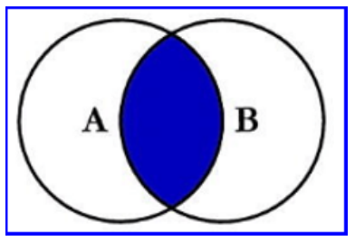
隐式内连接
隐式内连接：看不到JOIN关键字，条件使用WHERE指定
SELECT * FROM 表1, 表2 WHERE 条件;显式内连接
显式内连接：使用INNER JOIN ... ON语句, 可以省略INNER
SELECT * FROM 表1 INNER JOIN 表2 ON 表连接条件 WHERE 查询条件;具体操作：
- 查询唐僧的信息，显示员工id，姓名，性别，工资和所在的部门名称，我们发现需要联合2张表同时才能查询出需要的数据，我们使用内连接
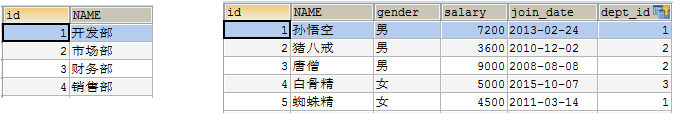
- 确定查询哪些表
SELECT * FROM tab_dept INNER JOIN tab_emp;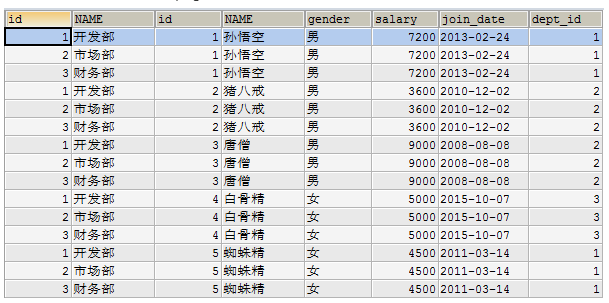
- 确定表连接条件，员工表.dept_id = 部门表.id 的数据才是有效的
SELECT * FROM tab_dept INNER JOIN tab_emp ON tab_emp.`dept_id`=tab_dept.`id`;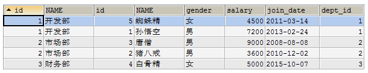
- 确定查询条件，我们查询的是唐僧的信息，部门表.name=’唐僧’
SELECT * FROM tab_dept INNER JOIN tab_emp ON tab_emp.`dept_id`=tab_dept.`id` AND tab_emp.`NAME`='唐僧';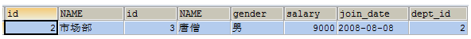
- 确定查询字段，查询唐僧的信息，显示员工id，姓名，性别，工资和所在的部门名称
SELECT tab_emp.`id`, tab_emp.`NAME`, tab_emp.`gender`, tab_emp.`salary`, tab_dept.`NAME` FROM tab_dept INNER JOIN tab_emp ON tab_emp.`dept_id`=tab_dept.`id` AND tab_emp.`NAME`='唐僧';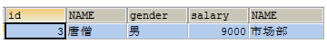
- 我们发现写表名有点长，可以给表取别名，显示的字段名也使用别名
SELECT e.`id` 员工编号, e.`NAME` 员工姓名, e.`gender` 性别, e.`salary` 工资, d.`NAME` 部门名称 FROM tab_dept d INNER JOIN tab_emp e ON e.`dept_id`=d.`id` AND e.`NAME`='唐僧';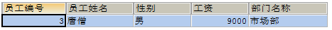
小结
隐式内连接和显示内连接的格式？
隐式内连接SELECT * FROM 表1, 表2 WHERE 条件;显示内连接(建议)
SELECT * FROM 表1 INNER JOIN 表2 ON 表连接条件 WHERE 查询条件;
表连接查询-左外连接(重要)
目标
学习左外连接查询
讲解
左外连接：使用LEFT OUTER JOIN ... ON，OUTER可以省略
SELECT * FROM 左表 LEFT OUTER JOIN 右表 ON 表连接条件 WHERE 查询条件;左外连接可以理解为：将满足要求的数据显示,左表不满足要求的数据也显示(保证左表的数据全部显示)
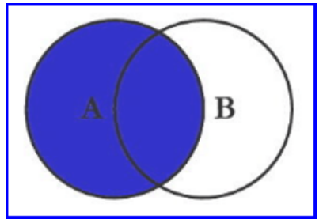
具体操作：
- 在部门表中增加一个销售部
INSERT INTO tab_dept (NAME) VALUES ('销售部');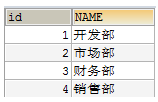
- 使用内连接查询
SELECT * FROM tab_dept INNER JOIN tab_emp ON tab_emp.`dept_id`=tab_dept.`id`;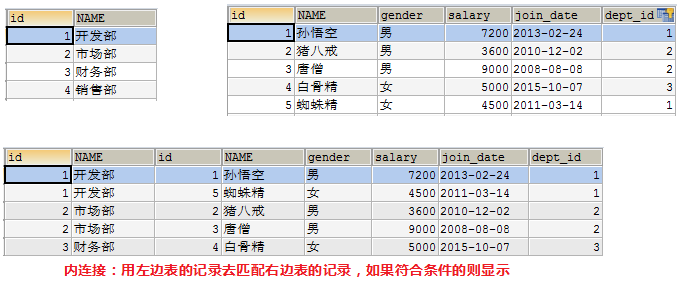
- 使用左外连接查询
SELECT * FROM tab_dept LEFT OUTER JOIN tab_emp ON tab_emp.`dept_id`=tab_dept.`id`;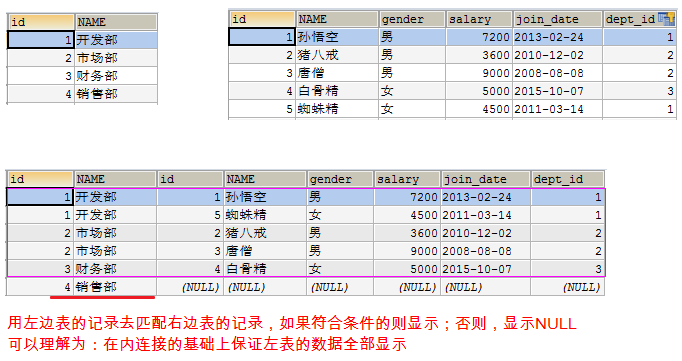
小结
左外连接查询格式？
SELECT * FROM 左表 LEFT OUTER JOIN 右表 ON 表连接条件 WHERE 查询条件;左外连接查询特点？
满足条件的数据显示,左表不满足条件的也显示
表连接查询-右外连接
目标
学习右外连接查询
讲解
右外连接：使用RIGHT OUTER JOIN ... ON，OUTER可以省略
SELECT * FROM 左表 RIGHT OUTER JOIN 右表 ON 表连接条件 WHERE 查询条件;右外连接可以理解为：满足要求的数据显示,并且右表不满足要求的数据也显示(在内连接的基础上保证右边的数据全部显示)
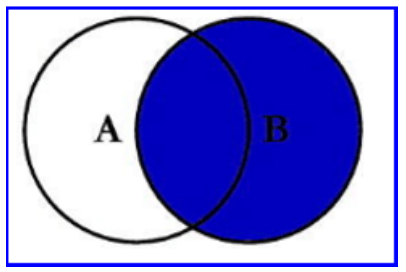
具体操作：
- 在员工表中增加一个员工
INSERT INTO tab_emp(NAME,gender,salary,join_date,dept_id) VALUES('沙僧','男',6666,'2013-02-24',NULL);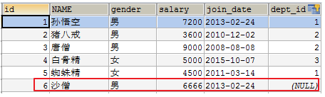
- 使用内连接查询
SELECT * FROM tab_dept INNER JOIN tab_emp ON tab_emp.`dept_id`=tab_dept.`id`;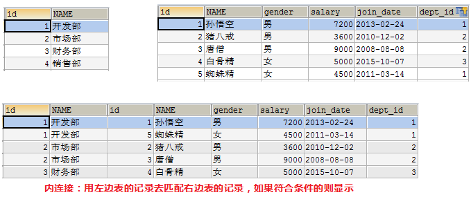
- 使用右外连接查询
SELECT * FROM tab_dept RIGHT OUTER JOIN tab_emp ON tab_emp.`dept_id`=tab_dept.`id`;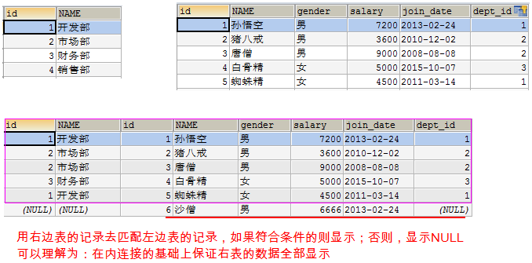
小结
右外连接查询格式？
SELECT * FROM 左表 RIGHT OUTER JOIN 右表 ON 表连接条件 WHERE 查询条件;右外连接查询特点？
满足条件的显示,保证右表不满足条件的数据也显示
子查询介绍
目标
学习子查询的概念
了解子查询的三种情况
什么是子查询
一个查询语句的结果作为另一个查询语句的一部分
SELECT 查询字段 FROM 表 WHERE 条件;SELECT * FROM employee WHERE salary=(SELECT MAX(salary) FROM employee);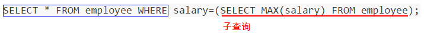
子查询需要放在（）中
先执行子查询，将子查询的结果作为父查询的一部分
子查询结果的三种情况
- 子查询的结果是单行单列的时候
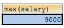 - 子查询的结果是多行单列的时候
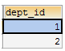 - 子查询的结果是多行多列
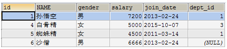
小结
什么是子查询？
一个查询语句的结果作为另一个查询语句的一部分
子查询结果的三种情况？
单行单列 多行单列 多行多列
子查询的结果是单行单列(重要)
目标
学习子查询的结果是单行单列的查询
讲解
子查询结果是单列，在WHERE后面作为条件SELECT 查询字段 FROM 表 WHERE 字段=(子查询);
查询工资最高的员工是谁？
- 查询最高工资是多少
SELECT MAX(salary) FROM tab_emp;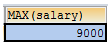
- 根据最高工资到员工表查询到对应的员工信息
SELECT * FROM tab_emp WHERE salary=(SELECT MAX(salary) FROM tab_emp);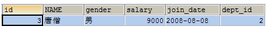
查询工资小于平均工资的员工有哪些？
- 查询平均工资是多少
SELECT AVG(salary) FROM tab_emp;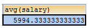
- 到员工表查询小于平均的员工信息
SELECT * FROM tab_emp WHERE salary < (SELECT AVG(salary) FROM tab_emp);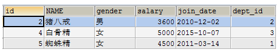
小结
子查询的结果是单行单列时父查询如何处理？
放在where后面作为条件 可以使用 = < >处理子查询结果是多行单列(重要)
目标
学习子查询的结果是多行单列的查询
讲解
子查询结果是多行单列，结果集类似于一个数组，在WHERE后面作为条件，父查询使用IN运算符
SELECT 查询字段 FROM 表 WHERE 字段 IN (子查询);查询工资大于5000的员工，来自于哪些部门的名字
- 先查询大于5000的员工所在的部门id
SELECT dept_id FROM tab_emp WHERE salary > 5000;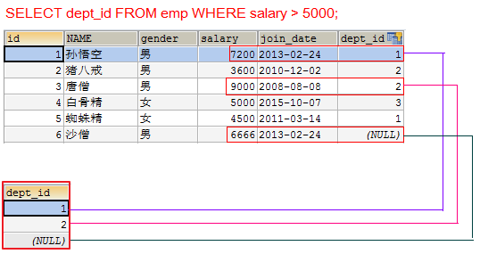
- 再查询在这些部门id中部门的名字
SELECT tab_dept.name FROM tab_dept WHERE tab_dept.id IN (SELECT dept_id FROM tab_emp WHERE salary > 5000);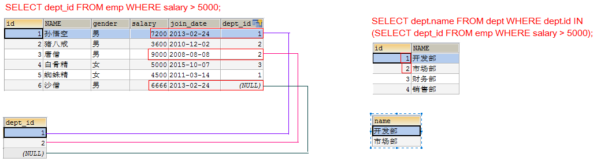
小结
子查询的结果是多行单列时父查询如何处理？
作为父查询的条件, 多个值使用IN来处理子查询的结果是多行多列(了解)
目标
学习子查询的结果是多行多列的查询
讲解
子查询结果是多列，在FROM后面作为虚拟表
SELECT 查询字段 FROM （子查询） 表别名 WHERE 条件;子查询作为表需要取别名，否则这张表没有名称无法访问表中的字段
查询出2011年以后入职的员工信息，包括部门名称
- 在员工表中查询2011-1-1以后入职的员工
SELECT * FROM tab_emp WHERE join_date > '2011-1-1';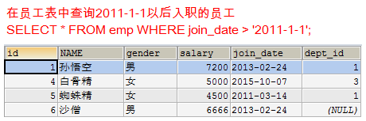
- 查询所有的部门信息，与上面的虚拟表中的信息组合，找出所有部门id等于dept_id
SELECT * FROM tab_dept d, (SELECT * FROM tab_emp WHERE join_date > '2011-1-1') e WHERE e.dept_id = d.id;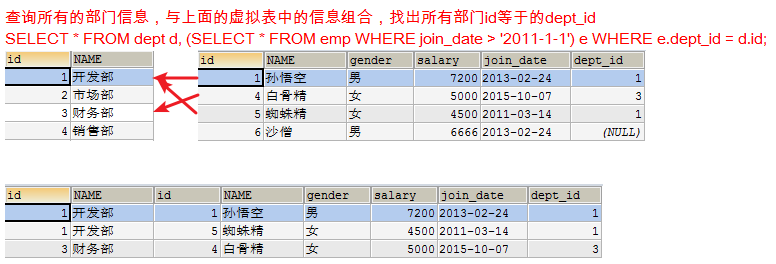
小结
三种子查询情况：
1.单行单列
2.多行单列
3.多行多列多表查询案例
我们在公司开发中，根据不同的业务需求往往需要通过2张及以上的表中去查询需要的数据。所以我们有必要学习2张及以上的表的查询。其实不管是几张表的查询，都是有规律可循的。
准备数据
-- 部门表
CREATE TABLE dept (
id INT PRIMARY KEY, -- 部门id
dname VARCHAR(50), -- 部门名称
loc VARCHAR(50) -- 部门位置
);
-- 添加4个部门
INSERT INTO dept(id,dname,loc) VALUES
(10,'教研部','北京'),
(20,'学工部','上海'),
(30,'销售部','广州'),
(40,'财务部','深圳');
-- 职务表，职务名称，职务描述
CREATE TABLE job (
id INT PRIMARY KEY,
jname VARCHAR(20),
description VARCHAR(50)
);
-- 添加4个职务
INSERT INTO job (id, jname, description) VALUES
(1, '董事长', '管理整个公司，接单'),
(2, '经理', '管理部门员工'),
(3, '销售员', '向客人推销产品'),
(4, '文员', '使用办公软件');
-- 员工表
CREATE TABLE emp (
id INT PRIMARY KEY, -- 员工id
ename VARCHAR(50), -- 员工姓名
job_id INT, -- 职务id
mgr INT , -- 上级领导
joindate DATE, -- 入职日期
salary DECIMAL(7,2), -- 工资
bonus DECIMAL(7,2), -- 奖金
dept_id INT, -- 所在部门编号
CONSTRAINT emp_jobid_ref_job_id_fk FOREIGN KEY (job_id) REFERENCES job (id),
CONSTRAINT emp_deptid_ref_dept_id_fk FOREIGN KEY (dept_id) REFERENCES dept (id)
);
-- 添加员工
INSERT INTO emp(id,ename,job_id,mgr,joindate,salary,bonus,dept_id) VALUES
(1001,'孙悟空',4,1004,'2000-12-17','8000.00',NULL,20),
(1002,'卢俊义',3,1006,'2001-02-20','16000.00','3000.00',30),
(1003,'林冲',3,1006,'2001-02-22','12500.00','5000.00',30),
(1004,'唐僧',2,1009,'2001-04-02','29750.00',NULL,20),
(1005,'李逵',4,1006,'2001-09-28','12500.00','14000.00',30),
(1006,'宋江',2,1009,'2001-05-01','28500.00',NULL,30),
(1007,'刘备',2,1009,'2001-09-01','24500.00',NULL,10),
(1008,'猪八戒',4,1004,'2007-04-19','30000.00',NULL,20),
(1009,'罗贯中',1,NULL,'2001-11-17','50000.00',NULL,10),
(1010,'吴用',3,1006,'2001-09-08','15000.00','0.00',30),
(1011,'沙僧',4,1004,'2007-05-23','11000.00',NULL,20),
(1012,'李逵',4,1006,'2001-12-03','9500.00',NULL,30),
(1013,'小白龙',4,1004,'2001-12-03','30000.00',NULL,20),
(1014,'关羽',4,1007,'2002-01-23','13000.00',NULL,10);
-- 工资等级表
CREATE TABLE salarygrade (
grade INT PRIMARY KEY,
losalary INT,
hisalary INT
);
-- 添加5个工资等级
INSERT INTO salarygrade(grade,losalary,hisalary) VALUES
(1,7000,12000),
(2,12010,14000),
(3,14010,20000),
(4,20010,30000),
(5,30010,99990);分析4张表的关系：通过4张表可以查出一个员工的所有信息
练习1
目标
查询所有员工信息。显示员工编号，员工姓名，工资，职务名称，职务描述，部门名称，部门位置
讲解
具体操作：
确定要查询哪些表，emp e, job j, dept d
SELECT * FROM emp e INNER JOIN job j INNER JOIN dept d;

确定表连接条件 e.job_id=j.id and e.dept_id=d.id
SELECT * FROM emp e INNER JOIN job j ON e.job_id=j.id INNER JOIN dept d ON e.dept_id=d.id;

确定查询字段：员工编号，员工姓名，工资，职务名称，职务描述，部门名称，部门位置
SELECT e.`id`, e.`ename`, e.`salary`, j.`jname`, j.`description`, d.`dname`, d.`loc` FROM emp e INNER JOIN job j ON e.job_id=j.id INNER JOIN dept d ON e.dept_id=d.id;
练习2
目标
查询经理的信息。显示员工姓名，工资，职务名称，职务描述，部门名称，部门位置，工资等级
讲解
具体操作：
确定要查询哪些表，emp e, job j, dept d, salarygrade s
SELECT * FROM emp e INNER JOIN job j INNER JOIN dept d INNER JOIN salarygrade s;

确定表连接条件 e.job_id=j.id and e.dept_id=d.id and e.salary between s.losalary and s.hisalary
SELECT * FROM emp e INNER JOIN job j ON e.job_id=j.id INNER JOIN dept d ON e.dept_id=d.id INNER JOIN salarygrade s ON e.salary BETWEEN s.losalary AND s.hisalary;

额外条件：只需要查询经理的信息（j.jname=’经理’）

确定查询字段：员工姓名，工资，职务名称，职务描述，部门名称，部门位置，工资等级
SELECT e.`ename`, e.`salary`, j.`jname`, j.`description`, d.`dname`, d.`loc`, s.`grade` FROM emp e INNER JOIN job j ON e.job_id=j.id INNER JOIN dept d ON e.dept_id=d.id INNER JOIN salarygrade s ON e.salary BETWEEN s.losalary AND s.hisalary AND j.jname='经理';
练习3
目标
查询出部门编号、部门名称、部门位置、部门人数
讲解
具体操作：
去员工表中找到每个部门的人数和部门id
SELECT dept_id, COUNT(*) FROM emp GROUP BY dept_id;
再和部门表连接查询
SELECT * FROM dept d INNER JOIN (SELECT dept_id, COUNT(*) FROM emp GROUP BY dept_id) e ON e.dept_id=d.`id`;

显示对应的字段
SELECT d.`id`, d.dname, d.`loc`, e.total 部门人数 FROM dept d INNER JOIN (SELECT dept_id, COUNT(*) total FROM emp GROUP BY dept_id) e ON e.dept_id=d.`id`;
最终效果：
小结
多表查询3个步骤
- 明确查询哪些表
- 明确表连接条件
- 其他的查询
练习4
目标
列出所有员工的姓名及其直接上级的姓名，没有领导的员工也需要显示
讲解
具体操作：

1. 确定要查询哪些表，emp e, emp mSELECT * FROM emp e INNER JOIN emp m; 
2. 确定表连接条件 e.mgr=e2.idSELECT * FROM emp e INNER JOIN emp m ON e.`mgr`=m.`id`;
SELECT * FROM emp e LEFT JOIN emp m ON e.`mgr`=m.`id`; 
我们发现少了一条数据，因为罗贯中是董事长没有上司
没有领导的员工也需要显示，所以左表的数据需要全部显示。使用左外连接
3. 确定查询字段：员工的姓名及其直接上级的姓名SELECT e.`ename`, IFNULL(m.`ename`, '没有') 上司 FROM emp e LEFT JOIN emp m ON e.`mgr`=m.`id`; 
练习5
目标
查询出所有的普通员工，即员工id不在mgr这一列中的员工
讲解
具体操作:
1. 查询所有的管理者的id，去掉重复，并且不能包含null，因为null会导致外查询in失效
select distinct(mgr) from emp where mgr is not null;
2. 查询id不在上面的id中的员工
select * from emp where id not in (select distinct(mgr) from emp where mgr is not null);查询结果
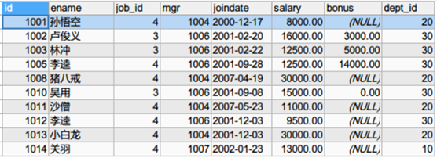
练习6
目标
查询工资高于公司平均工资的所有员工信息。显示员工信息，部门名称，上级领导，工资等级
讲解
具体操作：
先统计公司平均工资
SELECT AVG(salary) FROM emp; 
1. 确定要查询哪些表，emp e, emp m, dept d, salarygrade sSELECT * FROM emp e INNER JOIN emp m INNER JOIN dept d INNER JOIN salarygrade s; 
2. 确定表连接条件 e.dept_id=d.id and e.mgr=m.id and e.salary between s.losalary and hisalary and e.salary>公司平均薪金SELECT * FROM emp e INNER JOIN emp m ON e.mgr=m.id INNER JOIN dept d ON e.dept_id=d.id INNER JOIN salarygrade s ON e.salary BETWEEN s.losalary AND hisalary WHERE e.salary>(SELECT AVG(salary) FROM emp); 
3. 确定查询字段：员工信息，部门名称，上级领导，工资等级。SELECT e.*, d.`dname`, m.`ename` 上级领导, s.`grade` FROM emp e INNER JOIN emp m ON e.mgr=m.id INNER JOIN dept d ON e.dept_id=d.id INNER JOIN salarygrade s ON e.salary BETWEEN s.losalary AND hisalary WHERE e.salary>(SELECT AVG(salary) FROM emp); 
MySQL的索引
目标
了解MySQL的索引作用
讲解
索引是用于加速数据存取的数据库对象。合理的使用索引可以提高数据访问性能。
为什么添加了索引之后，会加快查询速度呢？
新华字典：我们都知道新华字典里面包含了很多汉字，这些汉字就好比我们数据库表里面的数据，那么我们如何快速查找厚厚字典里面具体的一个汉字在那一页呢? 我们会首先看字典的目录,通过目录里面按照拼音或偏旁部首方式快速查找到一个小的区域,之后再到小区域范围内查找到想要的数据，那么这里的字典目录就是索引。
索引的好处就是提高你找到数据的速度，但是正是因为你建了索引，就应该有人专门来维护索引，维护索引是要有时间和系统的开销，也就是说索引是不能乱建的。
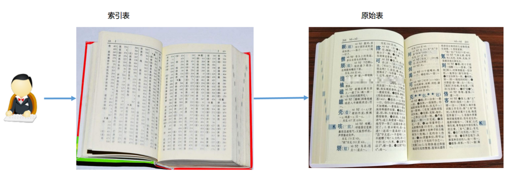
数据库查询数据方式
普通查询数据方式：从数据表第一条位置开始查询，进行逐条查询，直至查找到最后一条，将所有符合的数据找到
索引查询数据方式：先从索引表中查询，定位到大致的区间，再查真实的表
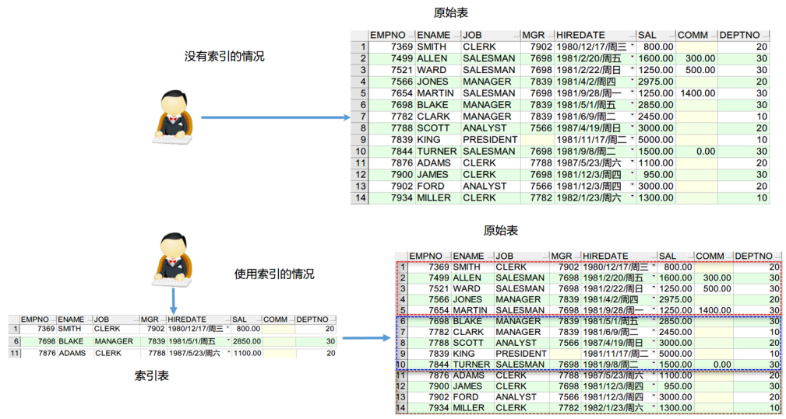
小结
说出索引的作用
提高查询的效率
创建，查看，删除索引
目标
学习索引的创建，查看，删除
讲解
创建索引
单列索引是基于单个列所建立的索引:
CREATE INDEX 索引名 ON 表名(字段名);查看表中的索引
SHOW INDEX FROM 表名;删除索引
DROP INDEX 索引名 ON 表名;复合索引（了解）
复合索引是基于两个列或多个列的索引。在同一张表上可以有多个索引
CREATE INDEX 索引名 ON 表名(字段名1, 字段名2);代码演示
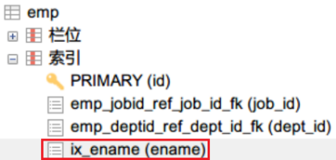
创建测试表
CREATE TABLE stu (
id INT PRIMARY KEY AUTO_INCREMENT,
NAME VARCHAR(20),
sex CHAR(1),
address VARCHAR(50)
);索引操作:
-- 显示指定表中所有的索引
SHOW INDEX FROM emp;
-- 用名字创建索引值
CREATE INDEX idx_name ON emp(ename);
-- 删除上面创建的索引
DROP INDEX idx_name ON emp;
-- 创建名字和工资的复合索引(了解)
CREATE INDEX idx_ename_salary ON emp(ename, salary);
-- 删除复合索引(了解)
DROP INDEX idx_ename_salary ON emp;小结
创建索引
CREATE INDEX 索引名 ON 表名(字段名);查看索引
SHOW INDEX FROM 表名;删除索引
DROP INDEX 索引名 ON 表名;索引的测试案例
目标
往表中插入2百万级数据，根据索引优化速度
数据准备
创建表
DROP TABLE IF EXISTS tab_index_test;
CREATE TABLE tab_index_test (
id BIGINT(20) PRIMARY KEY NOT NULL AUTO_INCREMENT, -- 主键
username VARCHAR(16) DEFAULT NULL, -- 用户名
PASSWORD CHAR(36) DEFAULT NULL -- 密码，随机存储一些字符
) ENGINE=MYISAM DEFAULT CHARSET=utf8;
/*为方便快速插入千万条测试数据，使用MYISAM存储引擎，等我们插完数据，再把存储类型修改为InnoDB*/创建存储过程并调用（下一天会讲解存储过程，要求暂时先复制拷贝即可）
DELIMITER $$
DROP PROCEDURE IF EXISTS `insert_data`$$
CREATE PROCEDURE `insert_data`(IN tableName VARCHAR(100),IN num INT)
BEGIN
/*定义一个变量，存储当前执行的次数*/
DECLARE n INT DEFAULT 1;
WHILE n <= num DO
SET @sqlStr = CONCAT("INSERT INTO ", tableName, "(username, password) VALUES(CONCAT('用户', ", n, "), uuid())");
PREPARE stmt FROM @sqlStr;
EXECUTE stmt;
SET n = n + 1;
END WHILE;
END $$
DELIMITER ;
-- 插入200万条记录 (大约1分钟左右)
CALL insert_data('tab_index_test',2000000);
-- 修改index_test表的引擎为innodb
ALTER TABLE `tab_index_test` ENGINE=INNODB;对比查询效率
-- username没有创建索引速度比较慢
SELECT * FROM tab_index_test WHERE username='用户93023';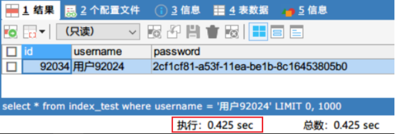
-- 为username建立索引
CREATE INDEX idx_username ON tab_index_test(username);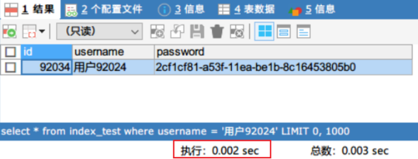
-- id是主键，默认有主键索引，查询速度比较快
SELECT * FROM tab_index_test WHERE id=93023;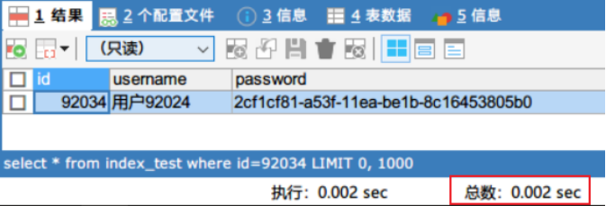
小结
有索引查询快
索引注意事项
索引的使用原则
- 在数据量大的表上建立索引才有意义(最起码十万级别数据才会考虑索引)
- 在经常查询的字段上使用索引，用在where子句后面或者是连接条件上的字段建立索引
- 表中数据修改频率高时，不建议建立索引（每插入、或者修改一条记录MySQL都要维护索引的顺序，这个过程不需要我们参与，但是非常消耗性能）
索引的不足
索引也有它的缺点：虽然索引大大提高了查询速度，同时却会降低更新表的速度，如对表进行INSERT、UPDATE和DELETE。因为更新表时，MySQL不仅要保存数据，还要保存更新索引文件。建立索引会占用磁盘空间的索引文件。
索引失效的几种情况
如果条件中有OR，即使其中有条件带索引也不会使用。(例外：OR两边条件都是同一个字段 )
模糊LIKE查询以 ‘%xxx’开头的不会使用索引，以’xxx%’结尾会使用索引。
WHERE语句中使用不等于 <>和 != 不会使用索引
如果MySQL计算使用全表扫描要比使用索引快，则不使用索引。
-- 准备数据，创建表
CREATE TABLE contact (
id INT PRIMARY KEY AUTO_INCREMENT,
NAME VARCHAR(20) NOT NULL,
sex CHAR(1),
age INT(3) UNSIGNED, -- 无符号
address VARCHAR(10), -- 籍贯
qq VARCHAR(18),
email VARCHAR(25)
);
-- 插入记录
INSERT INTO contact(NAME,sex,age,address,qq,email) VALUES
('猪八戒','男',25,'广东','834523234','zhuzhuxia@itcast.cn'),
('貂蝉','女',18,'湖南','59869834','diaochan@qq.com'),
('孙悟空','男',28,'湖南','87967822','wukong@itheima.com'),
('周瑜','男',25,'广西','2743759345','zhou@163.com');
SELECT * FROM contact;
-- explain的作用：模拟Mysql是如何执行SQL查询语句的，主要查看key这一列，判断是否使用索引
-- 没有创建索引的情况，key为null表示不走索引查询数据
EXPLAIN SELECT * FROM contact WHERE NAME='猪八戒';
-- 给名字创建索引
CREATE INDEX idx_name ON contact(NAME);
-- 再执行上面的代码, key为ix_name，表示使用了索引
EXPLAIN SELECT * FROM contact WHERE NAME='猪八戒';
-- 查询姓名是孙悟空或地址是湖南的，没有使用索引
EXPLAIN SELECT * FROM contact WHERE NAME='孙悟空' OR address='湖南';
-- 给地址创建索引
CREATE INDEX idx_address ON contact(address);
-- 给address创建索引，也是没有使用到索引, OR让索引失效了
EXPLAIN SELECT * FROM contact WHERE NAME='孙悟空' OR address='湖南';
-- 只查询姓名，因为记录很少，没有使用索引。如果mysql估计使用全表扫描要比使用索引快,则不使用索引
EXPLAIN SELECT * FROM contact WHERE NAME='孙悟空' OR NAME='猪八戒';
-- 插入记录
INSERT INTO contact(NAME,sex,age,address,qq,email) VALUES
('陈宏子','男',21,'广东','15811688','cheng@126.com'),
('秦婷婷','女',25,'广东','15888802','zhangsan1@126.com'),
('折蓉蓉','女',30,'广东','13423333','zherong@163.com'),
('曹丽娜','女',26,'广东','12223333','zhangsan1@qq.com'),
('李娜','女',46,'广西','1343333','zhangsan1@itcast.cn'),
('姜钰','男',49,'湖南','13223333','zhangsan1@qq.com'),
('魏天霞','女',38,'湖南','13054863','zhangsan1@126.com'),
('王官君','男',22,'湖南','1422233','zhangsan1@126.com'),
('王红梅','女',25,'福建','2777726','wang@qq.com'),
('郭淑慧','女',28,'海南','6058168','guoshu@qq.com'),
('马海娟','女',29,'海南','13829882','zhangsan1@itcast.cn'),
('孙洪山','男',24,'广东','1393518','zhangsan1@gmail.com'),
('胡丹丹','女',19,'广西','132138998','zhangsan1@itcast.cn'),
('胡书琴','女',30,'广西','152020988','zhangsan1@126.com'),
('冷静','男',32,'广东','13422223','lengjing@gmail.com'),
('李剑','男',33,'湖南','13423333','lijian@126.com'),
('任娟娟','女',21,'广西','13636668','juanjuan@itcast.cn'),
('范志坚','男',22,'湖南','1223333','zhijain@126.com'),
('王继开','男',21,'海南','1685168','jikai@itcast.cn'),
('刘小超','男',21,'广东','1342333','xiaochao@gmail.com');
-- 再次执行上面相同的代码，使用了索引
EXPLAIN SELECT * FROM contact WHERE NAME='孙悟空' OR NAME='猪八戒';
-- 查询以空尾的员工，没有使用索引
EXPLAIN SELECT * FROM contact WHERE NAME LIKE '%空';
-- 以刘开头的员工，使用了索引
EXPLAIN SELECT * FROM contact WHERE NAME LIKE '刘%';
-- where语句中使用 <>和 !=，没有使用索引
EXPLAIN SELECT * FROM contact WHERE NAME <> '猪八戒';事务的概念
目标
- 学习事务的概念
- 了解事务的四大特性
什么是事务
由多条SQL语句组成一个功能，这多条SQL语句就是事务。一个事务中的多条SQL要么都执行，要么都不执行，事务是一个不可分割的工作单位（原子性）。
事务的应用场景说明
例如: 张三给李四转账，张三账号减钱，李四账号加钱
-- 创建数据表
CREATE TABLE account (
id INT PRIMARY KEY AUTO_INCREMENT,
NAME VARCHAR(10),
balance DOUBLE
);
-- 添加数据
INSERT INTO account (NAME, balance) VALUES ('张三', 1000), ('李四', 1000);模拟张三给李四转500元钱，一个转账的业务操作最少要执行下面的2条语句：
- 张三账号-500
- 李四账号+500
-- 1. 张三账号-500
UPDATE account SET balance = balance - 500 WHERE id=1;
-- 2. 李四账号+500
UPDATE account SET balance = balance + 500 WHERE id=2;假设当张三账号上-500元，服务器崩溃了。李四的账号并没有+500元，数据就出现问题了。我们需要保证其中一条SQL语句出现问题，整个转账就算失败。只有两条SQL都成功了转账才算成功。这个时候就需要用到事务。
事务的四大特性(ACID)
| 事务特性 | 含义 |
|---|---|
| 原子性（Atomicity） | 事务是一个不可分割的工作单位，事务中的操作要么都发生，要么都不发生。 |
| 一致性（Consistency） | 事务前后数据的完整性必须保持一致。 |
| 隔离性（Isolation） | 是指多个用户并发访问数据库时，一个用户的事务不能被其它用户的事务所干扰，多个并发事务之间数据要相互隔离，不能相互影响。 |
| 持久性（Durability） | 指一个事务一旦被提交，它对数据库中数据的改变就是永久性的，接下来即使数据库发生故障也不应该对其有任何影响。 |
小结
什么是事务？
由多条SQL语句组成一个功能，这多条SQL语句就是事务事务四个特性？
1.原子性
2.一致性
3.隔离性
4.持久性手动提交事务(重要)
目标
学习手动的方式提交事务
MYSQL中可以有两种方式进行事务的操作
- 手动提交事务
- 自动提交事务(默认的)
事务有关的SQL语句
| SQL语句 | 描述 |
|---|---|
| START TRANSACTION; | 开启事务 |
| COMMIT; | 提交事务 |
| ROLLBACK; | 回滚事务 |
手动提交事务使用步骤
第1种情况：开启事务 -> 执行SQL语句 -> 成功 -> 提交事务
第2种情况：开启事务 -> 执行SQL语句 -> 失败 -> 回滚事务

案例演示1：模拟张三给李四转500元钱（成功）
目前数据库数据如下：
使用DOS控制台进入MySQL
执行以下SQL语句：
1.开启事务，2.张三账号-500，3.李四账号+500START TRANSACTION; UPDATE account SET balance = balance - 500 WHERE id=1; UPDATE account SET balance = balance + 500 WHERE id=2;
使用SQLYog查看数据库：发现数据并没有改变
在控制台执行
commit提交任务：
使用SQLYog查看数据库：发现数据改变

案例演示2：模拟张三给李四转500元钱（失败）
目前数据库数据如下：
在控制台执行以下SQL语句：
1.开启事务，2.张三账号-500START TRANSACTION; UPDATE account SET balance = balance - 500 WHERE id=1;
使用SQLYog查看数据库：发现数据并没有改变

在控制台执行
rollback回滚事务：
使用SQLYog查看数据库：发现数据没有改变

小结
- 如何开启事务: START TRANSACTION;
- 如何提交事务: COMMIT;
- 如何回滚事务: ROLLBACK;
自动提交事务(重要)
目标
了解自动提交事务
关闭自动提交事务
讲解
MySQL的每一条DML(增删改)语句都是一个单独的事务，每条语句DML执行完毕自动提交事务，MySQL默认开始自动提交事务。
将金额重置为1000

执行以下SQL语句
UPDATE account SET balance = balance - 500 WHERE id=1;使用SQLYog查看数据库：发现数据已经改变

使用SQL语句查看MySQL是否开启自动提交事务
show variables like '%commit%';
-- 或
SELECT @@autocommit; -- 推荐 通过修改MySQL全局变量”autocommit”，取消自动提交事务

0:OFF（关闭自动提交）
1:ON（开启自动提交）
关闭自动提交事务，设置自动提交的参数为OFF，执行SQL语句：
set autocommit = 0;
在控制台执行以下SQL语句：张三-500
UPDATE account SET balance = balance - 500 WHERE id=1;
使用SQLYog查看数据库，发现数据并没有改变

在控制台执行
commit提交任务
使用SQLYog查看数据库，发现数据改变

小结
查询事务提交状态
SHOW VARIABLES LIKE '%commit%'; SELECT @@AUTOCOMMIT; -- 推荐2. 关闭事务自动提交 ```sql SET AUTOCOMMIT = 0;
事务原理(重要)
目标
学习事务原理
讲解
事务开启之后, 所有的操作都会临时保存到事务日志, 事务日志只有在得到commit命令才会同步到数据表中，其他任何情况都会清空事务日志(rollback，断开连接)

小结
事务原理
- 用户登录数据库,会创建一个临时事务日志文件
- 普通的SQL执行,直接作用到数据库上
- 开启事务,操作机制发生变化
- 执行的SQL语句会保存到临时事务日志文件中
- 提交事务,临时日志文件中的SQL语句就会作用到数据库上
- 回滚事务,直接清空临时日志文件的内容
| 事务的操作 | MySQL操作事务的语句 |
|---|---|
| 开启事务 | START TRANSACTION; |
| 提交事务 | COMMIT; |
| 回滚事务 | ROLLBACK; |
| 查询事务的自动提交情况 | SELECT @@AUTOCOMMIT; |
| 设置事务的自动提交方式 | SET AUTOCOMMIT = 0; |
回滚点(了解)
之前我们事务在回滚的时候都是回滚到开始事务的地方，能不能再回滚事务的时候回滚到一个指定的地方呢？
目标
学习事务回滚点的设置和回滚
我们可以在事务中设置回滚点，点回滚到指定的位置。
设置回滚点语法
savepoint 回滚点名字;回到回滚点语法
rollback to 回滚点名字;小结
设置回滚点
saveponit 回滚点名称;回到指定回滚点
rollback to 回滚点名称;事务的隔离级别(了解)
目标
- 学习事务并发访问的三个问题
- 学习MySQL的四种隔离级别
事务在操作时的理想状态：多个事务之间互不影响，如果隔离级别设置不当就可能引发并发访问问题。
| 事务并发访问的问题 | 含义 |
|---|---|
| 脏读 | 一个事务读取到了另一个事务中尚未提交的数据 |
| 不可重复读 | 一个事务中两次读取的数据内容不一致 |
| 幻读 | 一个事务中多次读取，数据的数量不一样 |


MySQL数据库有四种隔离级别：上面的级别最低，下面的级别最高。“是”表示会出现这种问题，“否”表示不会出现这种问题。
| 级别 | 名字 | 隔离级别 | 脏读 | 不可重复读 | 幻读 | 数据库默认隔离级别 |
|---|---|---|---|---|---|---|
| 1 | 读未提交 | read uncommitted | 是 | 是 | 是 | |
| 2 | 读已提交 | read committed | 否 | 是 | 是 | Oracle和SQL Server |
| 3 | 可重复读 | repeatable read | 否 | 否 | 是 | MySQL |
| 4 | 串行化 | serializable | 否 | 否 | 否 |
小结
能够理解事务并发访问的三个问题
脏读：一个事务读取到另一个事务未提交的数据
不可重复读：一个事务读取多次,读取的数据内容不一致
幻读：一个事务读取多次,读取的数量不一致
能够说出MySQL的四种隔离级别
1.读未提交 read uncommitted
2.读已提交 read committed
3.可重复读 repeatable read
3.串行化 serializable脏读的演示
目标
- 学习设置MySQL的隔离级别
- 学习解决赃读
查询和设置隔离级别
查询全局事务隔离级别
show variables like '%isolation%'; -- 或 select @@tx_isolation; -- 推荐使用
设置事务隔离级别，需要退出MySQL再进入MySQL才能看到隔离级别的变化
set global transaction isolation level 级别字符串; -- 例如: set global transaction isolation level read uncommitted;
脏读的演示
脏读：一个事务读取到了另一个事务中尚未提交的数据。
将数据进行恢复：
UPDATE account SET balance = 1000;打开A窗口登录MySQL，设置全局的隔离级别为最低
mysql -uroot -proot set global transaction isolation level read uncommitted;
打开B窗口，AB窗口都开启事务
use day17; start transaction;
A窗口更新2个人的账户数据，未提交
update account set balance=balance-500 where id=1; update account set balance=balance+500 where id=2;
B窗口查询账户
select * from account;
A窗口回滚
rollback;
B窗口查询账户，钱没了

脏读非常危险的，比如张三向李四购买商品，张三开启事务，向李四账号转入500块，然后打电话给李四说钱已经转了。李四一查询钱到账了，发货给张三。张三收到货后回滚事务，李四的再查看钱没了。
解决脏读的问题：将全局的隔离级别进行提升为read committed
将数据进行恢复：
UPDATE account SET balance = 1000;在A窗口设置全局的隔离级别为
read committedset global transaction isolation level read committed;
B窗口退出MySQL，B窗口再进入MySQL

AB窗口同时开启事务

A更新2个人的账户，未提交
update account set balance=balance-500 where id=1; update account set balance=balance+500 where id=2;
B窗口查询账户

A窗口commit提交事务

B窗口查看账户

结论：read committed的方式可以避免脏读的发生
小结
查询全局事务隔离级别？
SHOW VARIABLES LIKE '%isolation%'; SELECT @@TX_ISOLATION;
设置全局事务隔离级别？
SET GLOBAL TRANSACTION ISOLATION LEVEL 级别字符串;
如何解决赃读?
将隔离级别提升到 read committed
不可重复读的演示
目标
解决不可重复读
讲解
不可重复读：一个事务中两次读取的数据内容不一致。
将数据进行恢复：
UPDATE account SET balance = 1000;开启A窗口
set global transaction isolation level read committed;
开启B窗口，在B窗口开启事务，并查询数据
start transaction; select * from account;
在A窗口开启事务，并更新数据
start transaction; update account set balance=balance+500 where id=1; commit;
B窗口查询
select * from account;
两次查询输出的结果不同，到底哪次是对的？不知道以哪次为准。
很多人认为这种情况就对了，无须困惑，当然是后面的为准。我们可以考虑这样一种情况，比如银行程序需要将查询结果分别输出到电脑屏幕和发短信给客户，结果在一个事务中针对不同的输出目的地进行的两次查询不一致，导致文件和屏幕中的结果不一致，银行工作人员就不知道以哪个为准了。
解决不可重复读的问题：将全局的隔离级别进行提升为：repeatable read
将数据进行恢复：
UPDATE account SET balance = 1000;A窗口设置隔离级别为：
repeatable readset global transaction isolation level repeatable read;
B窗口退出MySQL，B窗口再进入MySQL，并查询数据
start transaction; select * from account;
A窗口更新数据
start transaction; update account set balance=balance+500 where id=1; commit;
B窗口查询
select * from account;
结论：同一个事务中为了保证多次查询数据一致，必须使用
repeatable read隔离级别

小结
如何解决不可重复读？
将数据库的隔离级别设置为：REPEATABLE READ;幻读的演示
目标
解决幻读
讲解
幻读：一个事务中多次读取，数据量不一样。
幻读演示
- 开启A窗口，开启事务，并查询id>1的数据
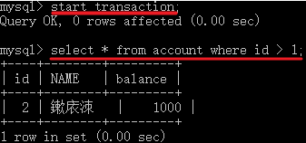
开启B窗口，开启事务，添加一条数据，并提交事务
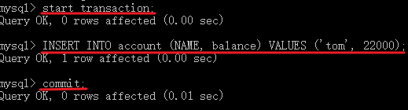
- 在A窗口修改id>1数据的balance为0，并重新查询id>1的数据
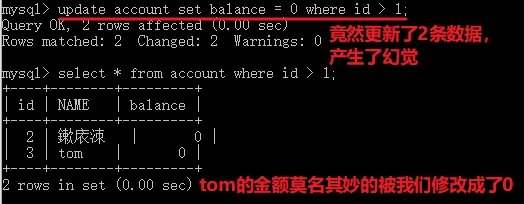
我们可以将事务隔离级别设置到最高，以挡住幻读的发生
将数据进行恢复：
UPDATE account SET balance = 1000;开启A窗口
set global transaction isolation level serializable; -- 设置隔离级别为最高
A窗口退出MySQL，A窗口重新登录MySQL
start transaction; select count(*) from account;
再开启B窗口，登录MySQL
在B窗口中开启事务，添加一条记录
start transaction; -- 开启事务 insert into account (name,balance) values ('LaoWang', 500);
在A窗口中commit提交事务，B窗口中insert语句会在A窗口事务提交后立马运行

在A窗口中接着查询，发现数据不变
select count(*) from account;
B窗口中commit提交当前事务

A窗口就能看到最新的数据

结论：使用serializable隔离级别，一个事务没有执行完，其他事务的SQL执行不了，可以挡住幻读。
通过提高隔离级别到串行化，可以避免并发访问的所有的问题，但效率太低。
小结
如何解决幻读？
将隔离级别设置成：SERIALIZABLE总结
能够使用内连接进行多表查询
隐式内连接: select * from 表1, 表2 where 条件;
(推荐)显示内连接: select * from 左表 inner join 右表 on 表连接条件 where 查询条件;
能够使用左外和右外连接进行多表查询
左外: select * from 左表 left outer join 右表 on 表连接条件 where 查询条件; 满足条件的数据显示,并且左表不满足条件的数据也显示
右外: select * from 左表 right outer join 右表 on 表连接条件 where 查询条件; 满足条件的数据显示,并且右表不满足条件的数据也显示
能够使用子查询
一个查询语句的结果作为另一个查询语句的一部分
SELECT * FROM 表名 WHERE 字段名=(SELECT MAX(字段名) FROM 表名);
先执行()里面的子查询
能够理解多表查询的规律
多表查询3步骤:
- 明确查询哪些表
- 明确表连接条件
- 后续查询
能够理解事务的概念
由多条SQL语句组成一个功能,这多条SQL语句形成一个事务
事务中的多条SQL语句要么都执行,要么都不执行,保证原子性
能够说出事务的原理
- 用户登录数据库,会创建一个临时事务日志文件
- 普通的SQL执行,直接作用到数据库上
- 开启事务,操作机制发生变化
- 执行的SQL语句会保存到临时事务日志文件中
- 提交事务,临时日志文件中的SQL语句就会作用到数据库上
- 回滚事务,直接清空临时日志文件的内容
理解MySQL索引的作用
提高查询效率